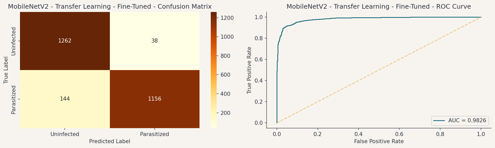
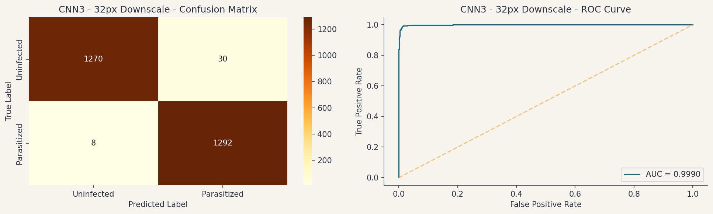

This project built and tested a set of AI models that automatically scan microscopic images of red blood cells and flag which ones are infected with malaria. The goal was to catch as many infections as possible while keeping the false alarm rate low enough for clinical use. Six model versions were trained and tested on 27,558 labeled cell images from the NIH Malaria Dataset. The best-performing model, -, correctly identifies - of infected cells and achieves - overall accuracy, missing fewer than 1 in 200 infections (- miss rate).
-
Recall (Parasitized class)
-
False negatives out of 1,300 infected
-
Overall accuracy (test set)
-
AUC-ROC (discriminative power)
Milestone Analysis: Findings at a Glance
1Simple AI is sufficient for this task. The first model detected - of infected cells after minimal training, confirming that the visual difference between infected and healthy cells is clear enough for AI to learn reliably.2Improving the design broke the decision-making. The second model was more sophisticated but became overly cautious: it detected almost nothing at standard settings (-), despite being able to distinguish infected from healthy cells internally. Strong underlying ability, broken outputs.3Adjusting sensitivity after training fixed the symptom, not the cause. Tuning the model's alert threshold recovered detection to -. It worked, but this manual adjustment must be redone after every model update.4Weighing False Negatives more heavily than False Positives improved detection dramatically. With that single change to the training objective, detection recovered to - with only - missed infections. No manual tuning required.
Final Analysis Extensions
5Using smaller images made the model more accurate, not less. Halving the input image size improved detection to - with only - missed infections. Reducing background detail appears to help the model focus on the parasite itself. This is the recommended model.6A general-purpose AI trained on everyday photos underperformed. A model pre-trained on millions of photographs of objects, animals, and scenes achieved only - detection. Microscope images of blood cells look nothing like the images it learned from.
Recommended for deployment: -. Detects - of infections, misses only - in 1,300 tested, fits on a USB drive (~2.1 MB), runs on any standard laptop.
1.1 Most Important Findings
The primary metric is how many infections are caught, but overall accuracy must also be high. A missed infection sends a patient home without treatment while undetected malaria can progress to organ failure and death. A false alarm triggers an unnecessary follow-up test. The two errors carry different clinical weights, and the model is built to reflect that. The target is a model that catches the overwhelming majority of infected cells while remaining accurate enough to be trusted by clinical staff. The winning model meets both conditions.
Finding 1: A simple model sets a strong baseline. The first model, CNN1, achieves - detection rate, - overall accuracy, and - discrimination score after just 8 rounds of training. This confirms that the visual difference between an infected and a healthy cell is large enough for even a small AI model to learn reliably, and that high detection and high accuracy are achievable together from the start.
Finding 2: A better-designed model still failed in practice, and revealed why. CNN2 added training variation and structural improvements that made it more stable. But when run at standard settings, it detected almost nothing: detection rate collapsed to -, despite a strong overall discrimination score of -. The model was reading the right signal (it could tell infected from healthy) but hedged every prediction, never committing confidently enough to trigger an alert. Adjusting the sensitivity threshold at which it calls a cell "infected" recovered - detection. A model can be technically capable and still fail in practice if it isn't calibrated to act on its own outputs. How a model is trained matters as much as how it is designed.
Finding 3: Retraining with a corrected cost structure eliminated the need for a threshold patch. CNN3 keeps CNN2's design identical and changes only one thing in training: a missed infection is penalized twice as heavily as a false alarm. Where CNN2 required a post-hoc threshold adjustment to recover recall, CNN3 achieves - detection at the default threshold, with only - missed infections out of 1,300 infected test cells and overall accuracy (-) comparable to the baseline. The class weighting trained the model to commit to its own signal, so no calibration patch was needed. Because everything else is identical to CNN2, this result isolates the cause: re-weighting the cost of errors during training fixed what a threshold adjustment could only compensate for.
Finding 4: A pre-trained industry model underperformed the custom approach. MobileNetV2, a well-regarded AI model pre-trained on 1.28 million everyday photographs, achieved only - detection (- missed infections) despite a competitive overall score of -. The likely explanation: what it learned from photographs of cats, cars, and landscapes doesn't translate well to microscope images of stained blood cells at this scale. A model trained from scratch on the specific task outperformed one that arrived pre-loaded with unrelated knowledge. MobileNetV2 was also tested at 128px; recall fell further to approximately 72%. Higher resolution did not help.
Finding 5: Using smaller images produced the best result in the study. CNN3-32px keeps everything from CNN3 identical and changes only the input image size, from 64 to 32 pixels. The result is the best-performing model: - detection with only - missed infections, a discrimination score of -, and a smaller, faster model. The mechanism is not fully understood, but smaller images appear to reduce background noise and focus the model on the parasite itself rather than surrounding cell detail.
A small, purpose-built model trained from scratch can be viable in a resource-constrained clinic and can even strongly outperform a commercial pre-trained alternative. The decisive changes for our experiments were weighting missed diagnoses more heavily during training and reducing the input image size.
1.2 Final Model Specifications
The recommended model is -, a custom-built neural network identical in structure to CNN2, with two targeted changes:
Change 1 · Training objective
2× penalty
Missing an infection is penalized twice as heavily as a false alarm during training. This corrects the cost structure that caused CNN2 to hedge at the default threshold.
Change 2 · Input resolution
32 px (down from 64)
Halving the image size reduced background noise and improved detection. Smaller images appear to focus the model on the parasite itself rather than surrounding cell detail.
Parameter
Value
Architecture
Custom 3-stage neural network with regularization layers to prevent overfitting
Feature detectors
32 → 64 → 128 per stage (increasing detail at each stage)
Output
Single binary prediction: Infected or Not Infected
Input image size
- pixels, color
Error cost weighting
Missing an infection costs 2× more than a false alarm
Training stopping rule
Automatically stopped when performance stopped improving (prevents over-training)
Training variation
Images randomly rotated, flipped, and shifted during training to improve robustness
Training rounds
- (best result from round -)
Deployed model size
~2.1 MB (fits on any USB drive)
Detection rate (test set)
-; - missed infections out of 1,300 infected test images
Discrimination score
- (1.0 = perfect; 0.5 = random)
Overall accuracy
-
The complete model performance comparison across all evaluated architectures is shown below.
Model
Recall
False Negatives
Accuracy
AUC-ROC
ms / image (pipeline)
RAM (MB)
Parameters
Loading…
Section 2
Problem and Solution Summary
2.1 The Problem
Malaria is caused by Plasmodium parasites transmitted through the bites of infected Anopheles mosquitoes. Once in the bloodstream, the parasites invade red blood cells, and in the absence of timely treatment, the infection can progress to organ failure and death. According to the WHO, more than 229 million malaria cases and approximately 400,000 deaths were reported globally in 2019.[1] Sub-Saharan Africa bears 94% of that burden; children under five account for 67% of all malaria deaths worldwide.[1]
The standard diagnostic method, microscopic examination of Giemsa-stained blood smear slides, is time-intensive and entirely dependent on the availability of trained microscopists. In low-resource, high-burden settings, that expertise is typically scarce, unevenly distributed, and subject to operator fatigue over long shifts. Inter-observer variability further undermines diagnostic consistency: studies report that agreement between expert microscopists on the same slide falls significantly in resource-constrained settings.[9] The consequence is that infection rates in communities most affected by malaria are simultaneously the hardest to measure accurately.
The core bottleneck
100s
cells per slide
Examined manually, one by one, for every patient
→
Not enough
trained microscopists
Expertise is scarce and unevenly distributed in high-burden regions
→
Delayed
or missed diagnosis
Communities with the highest burden are the hardest to serve
An automated screening tool that routes only ambiguous cases to human review directly breaks this chain.
2.2 Solution Design and Rationale
The proposed solution is a CNN binary classifier trained to distinguish Parasitized from Uninfected cells in single-cell microscopy crops. Four design principles governed the approach:
Recall as the governing objective. Missed infections are the highest-cost error. The loss function and evaluation framework minimize false negatives, not aggregate accuracy.
Controlled experimental progression. Each model changes one variable: CNN1→CNN2 adds augmentation and architecture; CNN2→CNN3 changes only the training objective; CNN3→CNN3-32px changes only input resolution.
Deployability as a hard constraint. The model must run on a standard laptop with no GPU. CNN3-32px is ~2.1 MB and requires no cloud infrastructure.
Human-AI collaboration, not replacement. High-confidence predictions are auto-classified. Only borderline cases go to a microscopist.
1
Recall first
Minimize false negatives. A missed infection is a higher-cost error than a false alarm.
2
One variable at a time
Each model isolates one change, making results interpretable and findings reproducible.
3
Deployment-ready by design
Laptop CPU, no internet, ~2.1 MB. Field-deployable without cloud infrastructure.
4
Triage, not replacement
The model auto-classifies confident cases and routes borderline calls to a human reviewer.
Why the custom model beat the industry standard
MobileNetV2 (pre-trained)
Trained on 1.28 million everyday photographs: objects, animals, scenes. Knowledge from those images does not transfer to microscope blood cell images at this scale.
~85%
recall @ 64px
~72%
recall @ 128px
Higher resolution made it worse. Pre-training appears to be a liability for this task.
vs
CNN3-32px (trained from scratch)
Built and trained entirely on this task: Giemsa-stained blood cell microscopy. No prior knowledge to unlearn; every parameter learned from the target distribution.
-
recall @ 32px
- FN
out of 1,300
Smaller images improved performance. Domain-specific training outweighed general pre-training.

Figure 1. MobileNetV2 Fine-tuned (64px): confusion matrix and ROC curve (2,600 test images). Despite an AUC-ROC of -, recall at the default threshold was -. The high AUC reflects discrimination ability the model does not act on at threshold 0.5.

Figure 2. CNN3 - 32px Downscale: identical architecture and training; only input resolution differs. AUC-ROC: -.
From classification to triage. A model that only classifies cells as infected or not is not yet a clinical tool. The deployment design adds a second layer: rather than treating every prediction as final, the model's output score is used to route cells into three lanes. Cells the model is confident about (high score: auto-parasitized; low score: auto-uninfected) are classified without human review. Only cells in the confidence borderline band are referred to a microscopist. Figure 3 shows how that threshold is set and the resulting referral volume across the score distribution.
Triage counts at current thresholds
Updates live as you drag the threshold handles on the histogram below.
Figure 3. CNN3 - 32px Downscale. The concentration of false negatives at very low scores indicates structurally atypical cells unlikely to be recoverable through threshold adjustment alone. At the default operating point, - of cells are referred for human review; model recall on the auto-classified remainder is -.
False Negatives
2.3 How This Affects the Business
For a diagnostic lab operating in a malaria-endemic region, the deployment of CNN3 in triage mode would affect operations in three ways:
Speed. A trained microscopist examining a standard blood smear slide manually, at the WHO-recommended thoroughness level, requires 5 to 15 minutes per slide. A software pipeline running CNN3 (cell segmentation + per-cell classification) processes a comparable slide in under 30 seconds. For a lab handling 100 slides per day, this difference represents a shift from 8+ hours of continuous microscopy to automated pre-screening with microscopist review of the borderline -.
Consistency. A microscopist reviewing slide 80 of a 100-slide day performs differently than on slide 5. This model does not. It makes the same call at midnight that it makes at 8am, on the first slide of the day or the last. The miss rate of - does not drift with caseload, staffing levels, or how long someone has been on shift.
Access. The model is compact (~2.1 MB), runs on CPU, and requires no internet connection after deployment. This makes it viable as a component of a mobile diagnostic kit in settings where reliable power and connectivity are intermittent. The Claros implementation is designed with this deployment profile in mind.
System performance: ML-only vs. ML + human triage
On this clean, in-distribution test set, triage recovers only - additional missed infections: a marginal gain. That is not the primary argument for triage. The model is already well-calibrated, so the borderline band is narrow - only - cells of 2,600 fall there. In real deployment, the value of referring that - is threefold.
Uncertainty filter. Every cell the model is unsure about reaches a human before it reaches a patient record. This is the safety net for distribution shift: different staining, lighting, and morphology in the field will push more cells into the uncertain zone than appeared in this controlled test set.
Quality control. Referring - costs negligible microscopist time per slide while providing continuous ground-truth feedback. Disagreements between the model and the reviewer are a real-time signal of performance degradation.
Clinical trust. A human remains in the loop for every uncertain case. For regulatory acceptance and clinician adoption, that matters more than a 0.15% recall improvement on a benchmark.
CNN3-32px · ML only
Recall-
Missed infections / 1,300-
Human reviews / 2,6000
Throughput bottlenecknone
CNN3-32px + human triage
System recall*-
Missed infections / 1,300-
Human reviews / 2,600-
Throughput bottleneck- of volume
* Assumes 100% microscopist recall on referred cells. The - FN remaining after triage are cells outside the borderline band: the model classified them as Uninfected with enough confidence that they never reach the reviewer. These represent the hard floor of this architecture at this threshold.
Section 3
Recommendations for Implementation
3.1 Proposed Deployment Roadmap
M1M4M7M10M13M16M18
1. Pilot Validation
Months 1-3
Run the model alongside manual review at one partner lab on 2,000+ slides. Establish a site-specific baseline before changing any workflow.
2. Triage Integration
Months 3-6
Connect the model to the lab's system. Confident cases go to the diagnosis queue automatically. The uncertain - are flagged for a microscopist to review.
3. Full Slide Pipeline
Months 6-12
Add automated cell extraction from full slide images, closing the last manual step. Enables fully automated processing from image capture to result.
4. Multi-Site & Scale
Months 12-18
Expand to 3-5 additional labs with different equipment and patient populations. Performance at one site only proves it works there. Multi-site testing is required before any broad rollout.
Phase-Exit Criteria (Go / No-Go)
Phase
Go criteria
No-go signal
1. Pilot
Recall on site-specific slides ≥ 97% over 500+ cases; referral rate ≤ 5%; zero high-confidence false negatives on confirmed-positive slides; lab staff sign-off on workflow
Triage recall matches or exceeds manual baseline; referral queue processed within shift; microscopist acceptance rate ≥ 80% in parallel run; LIS integration validated end-to-end
Referral queue backlog grows, microscopist override rate exceeds 20%, or system latency > 5 min per batch
3. Full Slide Pipeline
Automated cell segmentation adds ≤ 2 min to total processing time; segmentation recall ≥ 95% on slide-level; end-to-end pipeline validated against ground truth
Recall ≥ 95% without retraining at 2+ new sites; drift detection active; retraining pipeline demonstrated; ethics/regulatory clearance obtained in at least one target jurisdiction
Site-specific recall degradation > 3pp, unresolved regulatory blocker, or compute infrastructure insufficient for retraining cadence
3.2 Stakeholder Actionables
Task
Lab Dir.
Clinical
IT
Donor
Reg.
Timeline → M18
Phase 1 · Pilot Validation
Select pilot site
●
○
Hardware & software setup
○
●
○
Ethics / IRB review
○
●
Staff training
○
●
Parallel run (model vs. manual)
●
○
Baseline performance review
●
○
Phase 2 · Triage Integration
Triage system go-live
○
●
Monitor & refine sensitivity threshold
●
●
Phase 3 · Full Slide Pipeline
Build cell extraction module
●
Full pipeline testing & sign-off
●
○
○
Phase 4 · Multi-Site & Scale
Multi-site rollout (3-5 labs)
●
○
●
Regulatory submission
○
○
●
Cross-site performance review
●
○
● leads ○ supports
3.3 Expected Benefits and Cost Assumptions
Important note on these estimates
Time benchmarks for manual microscopy are drawn from WHO guidelines.[8][9] Hardware costs reflect publicly available retail pricing. Workload reduction figures are derived directly from this model's triage performance (- referral rate). Pilot budget estimates are author projections based on comparable field deployments in low-resource settings, primarily sub-Saharan Africa; they are planning assumptions, not audited figures. Site-specific validation is required before scaling.
Estimated time per day (100 slides, 200 cells per slide):
of daily microscopist screening time freed for other work derived from model triage rate, not a literature benchmark
The value is in capability reallocation, not cost reduction. Trained diagnostic staff are scarce and serve large catchment populations. Hours spent on routine cell screening are hours unavailable for complex case review, patient consultation, and outbreak response. Automated pre-screening returns that time to work only a human can do.
High recall does not come at the cost of specificity. At - specificity, CNN3-32px generates only - false positives per 1,300 uninfected cells tested. Clinicians receive a flagged case only when the model has meaningful signal, not a flood of false alarms that erode trust and consume time.
Before
Routine screening repetitive, low-judgment
→
ML handles
~98% of slides auto-classified
→
Microscopist
Patient care complex cases
Phase 1 Pilot Budget Estimate: 6 months, 2 sites, incremental to baseline staffing, calibrated to sub-Saharan Africa field conditions (author estimates; no published benchmark):
Category
Item
Low
High
Hardware
Laptop per site (2), if not already owned $300-$500 each; most partner labs may already have suitable hardware
$0
$1,000
Camera mount / USB microscope adapter per site (2)
$600
$2,000
Personnel
Pilot coordinator (0.5 FTE, 6 months) Manages logistics, data collection, and lab liaison. The single largest cost.
$9,000
$15,000
Lab technician training per site (2-day onboarding, 2 technicians each) 4 technicians total across 2 sites
$1,600
$3,200
Technical support / data review (partial, remote) Monthly check-ins, model monitoring, anomaly review
$3,000
$5,000
Travel
Site visits for setup and mid-pilot review (2 trips) Flights, accommodation, per diem for coordinator
$6,000
$10,000
Lab supplies (consumables for parallel-run slides)
$800
$1,500
Ethics / Regulatory
IRB / ethics submission and local regulatory filing Highly variable by jurisdiction; zero if existing ethics framework already covers AI-assist studies
$0
$5,000
Total (incremental estimate)
$21K
$43K
Not included in this estimate: baseline lab operating costs, existing microscopist salary, cell segmentation tooling development, or model retraining costs triggered after the pilot. Those are ongoing program costs, not pilot-specific expenditures. Ongoing inference costs after deployment are effectively zero: no cloud subscription is required, and the model runs on existing hardware.
Estimated health impact (illustrative):
At - recall (CNN3-32px), 1 in approximately - infected cells is missed. For a lab processing 5,000 Parasitized cells per day, this implies approximately - undetected infections per day rather than 5,000 (if no automated screening were in place and slides went unreviewed due to staffing constraints).
The relevant baseline is not perfect human microscopy but delayed or absent screening. Against that baseline, automated pre-screening with - human review is a clear improvement in access to timely diagnosis.
3.4 Key Risks and Challenges
Six risks require active management before and during the pilot. None are blockers to starting; all have defined mitigations.
Single-source training data
All training images come from one institution with one staining method and one imaging setup. The performance numbers reflect how well the model handles images like the ones it trained on. Testing at different labs, with different equipment and protocols, has not been done and is required before any clinical deployment beyond the pilot site.
Species generalization
The training data contains predominantly P. falciparum, the most common and deadly malaria species. Other species (P. vivax, P. ovale, P. malariae) look different under the microscope. The model has not been tested on them and may miss infections without warning in regions where these species are prevalent.
Whole-slide pipeline gap
The model classifies individual cell images, but extracting those cells from a full microscope slide photograph is a separate step that hasn't been built yet. Until it is, someone must manually crop cells before the software can analyze them. That manual step limits the throughput gains the model can deliver and introduces its own errors.
Interpretability and clinician trust
The model returns a classification with no explanation of what drove it. Clinicians who cannot inspect the reasoning have legitimate grounds to distrust the output, which creates an adoption barrier independent of the model's accuracy. This project scoped for classification performance; visual explanation tooling (heatmaps highlighting which part of a cell drove the prediction) was not implemented but is compatible with this architecture and does not require retraining. It is a defined Phase 2 deliverable.
Staining and imaging variability
Real-world blood smears vary by staining concentration, preparation method, microscope model, and camera. The model was trained on standardized images. Labs with different equipment or protocols may see degraded accuracy and will likely need to retrain the model on a small set of their own verified slides before deployment.
Regulatory and liability pathway
Clinical diagnostic software requires regulatory clearance in most jurisdictions (FDA, CE-IVD, and local equivalents). This prototype has not been submitted for review. The two deployment paths carry different burdens: Path B, where the model is advisory and a microscopist confirms borderline results, follows a lighter decision-support pathway. Path A, where the model autonomously classifies the majority of cases, requires a stronger evidence package. Beginning under Path B is not merely a conservative operational choice; it generates the documented clinical performance data that any Path A submission will require.
3.5 Further Analysis Required
Five workstreams represent the clearest path from proof-of-concept to production-ready tool, ordered roughly by effort and dependency:
Model optimization experiments. Three controlled experiments are queued, all requiring no architectural changes and minimal additional compute:
Resolution + class-weight stack. Test the custom CNN at 48px (between the 32px winner and 64px underperformer), and combine it with a higher class-weight ratio to test whether the two recall levers compound.
MobileNetV2 controlled rerun. Retrain MobileNetV2 with the same recipe used for CNN3 (class weighting + early stopping on validation loss) to establish whether its recall gap is architectural or a configuration artifact.
Class-weight sensitivity sweep. Test ratios from 1:3 to 1:10 across both architectures to identify the point of diminishing returns or training instability.
Cross-site validation. Test-set performance only shows how the model handles images from the same source it was trained on. Running it against 500-1,000 verified slides from two different labs, with no retraining, would show how much accuracy degrades across different equipment and staining conditions. Beyond initial validation, the longer-term question is drift: new labs, new staining batches, technician variation over time. The triage loop provides a natural answer. Borderline cases routed to human review become labeled data; nightly retraining on that feedback allows the model to adapt continuously. CNN3's small parameter count and 32px input make this operationally practical on modest hardware, without requiring cloud compute or specialist infrastructure.
End-to-end slide pipeline. The current system requires pre-cropped individual cell images as input. A production-ready system needs a first stage that takes a full microscope photograph, locates the individual cells, and crops them automatically before passing them to the classifier. Hung et al. (2017) showed that a two-stage approach on malaria slides achieved 98% accuracy, matching expert human performance.[5]
Image capture integration. Removing the manual cell-cropping step requires integrating with a digitally-enabled microscope that can export images directly into the pipeline. Two deployment patterns are viable and serve different program needs. In a point-of-care setting, where a patient is present and treatment decisions are immediate, synchronous classification at the moment of capture returns a result before the patient leaves. In a surveillance or population-screening setting, where throughput matters more than individual turnaround time, an asynchronous queue processes images as they accumulate, with results available for batch clinical review. Cell segmentation is a prerequisite for both. The choice between them is a program-level decision that depends on the clinical context, staffing model, and infrastructure at each site.
Prediction confidence and uncertainty estimation. The current model outputs a sigmoid score that is used to route cells into three buckets. A more principled alternative is Monte Carlo Dropout, which runs inference multiple times with dropout active and uses the variance across runs as an explicit uncertainty estimate. Cells where the model is internally inconsistent across passes are flagged as uncertain regardless of where they fall relative to the fixed thresholds. This would reduce the threshold-setting burden and give microscopists a more interpretable signal: not just "borderline score" but "the model is uncertain on this cell." The computational overhead is modest (multiple forward passes on existing hardware) and the implementation requires no architectural change. For a submission intended to meet regulatory scrutiny, quantified uncertainty per cell provides a more principled basis for referral decisions than a fixed threshold alone.
Parasite specificity testing. Giemsa stain is not exclusive to Plasmodium. It is the standard stain for a range of blood parasites, including Trypanosoma (Chagas disease), Leishmania, and Histoplasma, as well as for general white blood cell and platelet morphology. The model was trained on slides labeled "Parasitized" or "Uninfected" where the parasitic signal is exclusively Plasmodium, but it has never been tested on slides containing other organisms. The open question for clinical deployment is whether the model has learned morphological features specific to Plasmodium, or whether it responds to any nuclear inclusion pattern that Giemsa renders visible. A false positive triggered by a non-malarial parasite is not a missed malaria case, but it changes how the tool should be represented to clinicians, how referral rates should be interpreted in co-endemic regions, and whether the output label should read "malaria detected" or the more defensible "parasite detected, confirm species." This should be tested before deployment in regions where co-infection or differential diagnosis is clinically relevant.
Production Monitoring and Model Governance
A model that performs well in testing can still fail in production if image quality shifts, sites use different equipment, or no one is watching for degradation. The following workstreams address each of those failure modes and should be scoped into the Phase 2 implementation plan:
Model registry and versioning. Every deployed version is stored with its performance record, enabling rollback if a retrained model underperforms and providing the audit trail required for regulatory submissions.
Distribution drift monitoring. The referral rate (the share of cells routed to the microscopist) rises before accuracy degrades when image quality changes (new equipment, different staining batch, technician variation). A simple daily dashboard against the pilot baseline is sufficient for early detection at small-volume sites.
Operating-point adjustment (no retraining required). Sensitivity and referral volume can be dialed up or down at any time without rebuilding the model. A site that wants more conservative behavior routes more cases to the microscopist; one that wants lower workload routes fewer. This is the first lever to pull when a site raises concerns. Retraining is the escalation, not the default.
Retraining pipeline. Every borderline cell the microscopist reviews generates a new labeled example. A nightly retraining cycle on that accumulated data keeps the model calibrated to local conditions, and the model is compact enough to retrain fully on a standard laptop in under 30 minutes without cloud infrastructure. Retraining is triggered when estimated field recall falls below 97% or referral volume rises more than 3 percentage points above the pilot baseline.
Reproducibility and code freeze. Before clinical deployment, the software pipeline is locked to a documented version with a full record of the training data used, a requirement for regulatory submissions and meaningful cross-site performance comparison.
Specimen collection & preparation
PATH A · AI Triage Mode Recommended
smear
Specimen collection & preparation
Blood smear stained (Giemsa); segmented into cell images
classify
CNN3-32px classifies all cells
Sigmoid scores assigned to each cell. ~3 min compute.
split
Auto Uninfected
~49%
direct
Referred
-
reviewed
Auto Para.
~49%
direct
treated
Patient notified; treatment initiated — ~25-30 min total
PATH B · AI-Assisted Batch Screening
smear
Specimen collection & preparation
Blood smear stained (Giemsa)
transport
Slide transported to lab
Batches collected from one or more clinics
queue
Slides queued for processing
Image capture and cell segmentation on batch arrival
classify
CNN3-32px classifies all cells
Sigmoid scores assigned to each cell. ~3 min compute.
split
Auto Uninfected
~49%
direct
Referred
-
reviewed
Auto Para.
~49%
direct
report
AI classification report generated
Cells in the referral zone routed to microscopist queue
queue
Microscopist reviews referred cells
Confirms or overrides borderline AI calls. Bottleneck scales with batch volume and number of contributing clinics.
treated
Patient notified; treatment initiated — hours to days total
Program-level decision required
Choose Path A if:
Patients present at point of care
Treatment decisions cannot wait
Stable power and connectivity at site
Choose Path B if:
High slide volume; throughput is the constraint
Results feed population-level reporting
Infrastructure is intermittent or shared
Bottom line for decision-makers
- is ready for a structured pilot. The model is compact, high-recall, and deployable on standard hardware. The next required step is not more model development, but rather a controlled pilot study at a partner lab to confirm that the - recall holds under real-world staining and imaging conditions, and to establish the operational workflow for borderline-case referral. A 6-month pilot with 2 sites and a $21,000-$43,000 incremental budget would provide the evidence base to support a scale decision. (Budget figures are author estimates based on comparable field deployments in low-resource settings; no published benchmark.)
Appendix
References
[1] World Health Organization. World Malaria Report 2020. Geneva: WHO, 2020. who.int
[2] NIH Malaria Cell Images Dataset. U.S. National Library of Medicine. lhncbc.nlm.nih.gov
[3] Rajaraman, S. et al. (2018). Pre-trained convolutional neural networks as feature extractors toward improved malaria parasite detection in thin blood smear images. PeerJ, 6, e4568. doi.org/10.7717/peerj.4568
[4] Sandler, M. et al. (2018). MobileNetV2: Inverted Residuals and Linear Bottlenecks. CVPR 2018.arXiv:1801.04381
[5] Hung, J. et al. (2017). Applying Faster R-CNN for Object Detection on Malaria Images. CVPR Workshops.arXiv:1704.07559
[6] Baum, J. et al. (2021). Automated detection and staging of malaria parasites from cytological smears using convolutional neural networks. Biological Imaging, 1, e2. doi.org/10.1017/S2633903X21000015
[7] Selvaraju, R. R. et al. (2017). Grad-CAM: Visual Explanations from Deep Networks via Gradient-based Localization. ICCV 2017.arXiv:1610.02391
[8] World Health Organization. Basic Malaria Microscopy, Part I: Learner's Guide. 2nd ed. Geneva: WHO, 2010. iris.who.int
[9] Wongsrichanalai, C. et al. (2007). A review of malaria diagnostic tools: microscopy and rapid diagnostic test (RDT). American Journal of Tropical Medicine and Hygiene, 77(6 Suppl), 119-127. doi.org/10.4269/ajtmh.2007.77.119